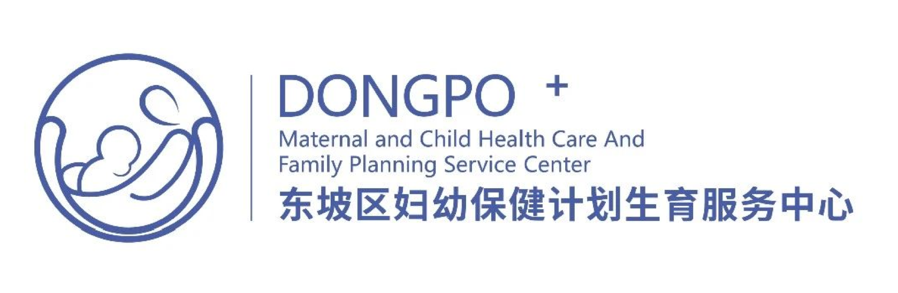
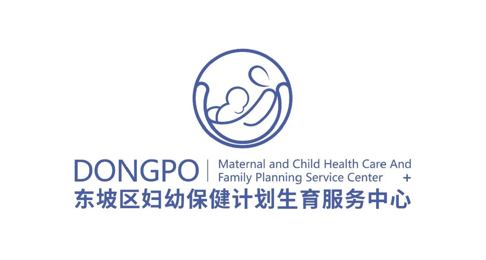
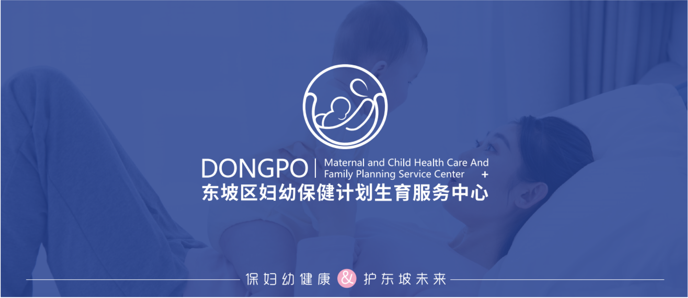
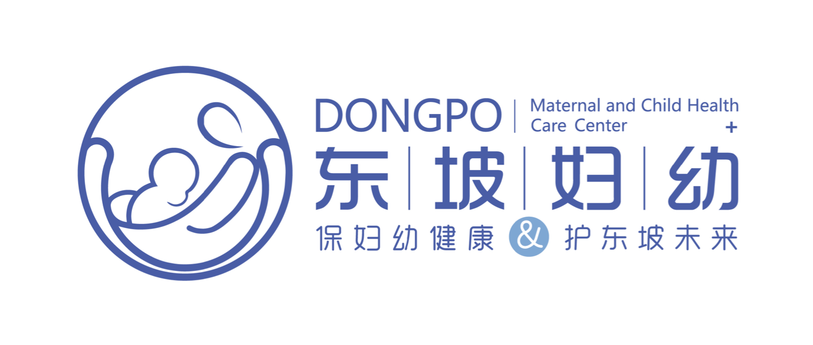

眉山市东坡区妇幼保健院成立于1952年，经过近70年的发展，我院被评为二级甲等妇幼保健院，获得了“国家级爱婴医院”的称号，是四川省产前筛查技术服务机构、市级文明单位、东坡区妇女儿童保健及疾病治疗中心。
2020年，东坡区妇幼保健计划生育服务中心进行了全新的医疗、妇幼资源配置与整合，是东坡区医改工作的重大突破，是对区妇保中心工作新的定位，东坡区妇幼保健计划生育服务中心站在了历史赋予的新的起点上！
新征程应有新面貌，在此背景之下，东坡区妇幼保健计划生育服务中心的视觉系统也随之提档升级：新的logo、新的VI、新的定位语，代表着我院全新的开始，我院将以更高的目标、更优的服务、更精湛的医疗技术，全方位地为东坡区妇女儿童的健康保驾护航！


“保妇幼健康”阐明我院工作职能，我们将一如既往的用心守护东坡妇女儿童的健康；
“护东坡未来”将长寿文化和东坡文化转化成医院自身文化，承载了新一代东坡妇幼人对幸福的向往及对未来的美好展望：“东坡”是“东坡区妇幼保健计划生育服务中心”本身，也是“东坡区”，更是“苏东坡”代表的东坡文化；“未来”代表着东坡区妇女儿童的未来、东坡区的未来、苏东坡后人的未来及东坡妇幼保健计划生育服务中心的未来。
定位语中的“保护”二字，也有对内对外两重含义：对内是要求每位职工在工作过程中遵守“保护”文化，时时刻刻将保护患者的使命牢记心中；对外是阐述我院保护人们群众健康的职责。


“保妇幼健康·护东坡未来”
我们希望东坡区的每一位妇女儿童都有好的身体、好的未来，因为孩子是我们的未来，只有他们好了，东坡区的未来才会好，东坡文化才会代代传承！